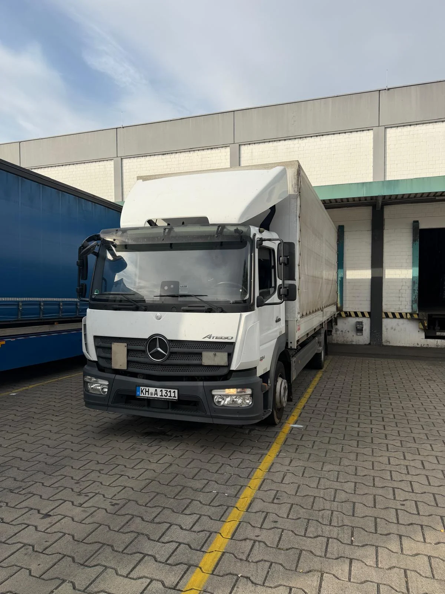

Sie sagen,
was ansteht.
Fahrzeugklasse, Einsatzort, Touren und Starttermin: Wir besprechen Ihren konkreten Bedarf.

Ihr Transportauftrag. Unser Einsatz.
LKW mit Fahrer für Ihre regelmäßigen Touren.

ANKA IM TRANSPORTALLTAGANKA unterstützt Ihren Transportbetrieb mit LKW und Fahrer im Festeinsatz.
Fahrzeug, Touren, Einsatzzeiten und Laufzeit stimmen wir auf Ihre Anforderungen ab. Als Subunternehmer arbeiten wir mit Speditionen, Logistikdienstleistern und Unternehmen zusammen.

7,5 t, 12 t, 18 t oder Sattelzug.
Wählen Sie Ihre Fahrzeugklasse.
Für Ihre regelmäßigen Transporte – mit Einsatzzeiten und Touren nach Vereinbarung.
Diesen Festeinsatz anfragen


Fahrzeugausstattung, Verfügbarkeit und Einsatzbedingungen stimmen wir persönlich mit Ihnen ab.
 ANKA TRANSPORT · BAD KREUZNACH
ANKA TRANSPORT · BAD KREUZNACHSie kennen Ihre Aufträge. Wir besprechen mit Ihnen, wie unser Festeinsatz Ihre Abläufe unterstützt.
Ihr Ansprechpartner ist Zafer Beyazdogan, Inhaber von ANKA TRANSPORT. Vom ersten Gespräch bis zur Abstimmung des Einsatzes.
Drei Schritte zum abgestimmten
Festeinsatz mit ANKA.
Fahrzeugklasse, Einsatzort, Touren und Starttermin: Wir besprechen Ihren konkreten Bedarf.
Touren, Einsatzzeiten, Laufzeit und Konditionen werden gemeinsam vereinbart.
Mit LKW und Fahrer starten wir zum vereinbarten Termin in Ihren abgestimmten Einsatz.
Sprechen wir über Ihre Touren, Ihre Einsatzzeiten und das passende Fahrzeug.
Festeinsatz anfragen